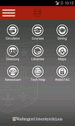

Welcome to your one-stop shop for all things WashU. If you can't find what you are looking for we will be happy to hear from you !
What is WashU ?
Washington University in St. Louis is a private research university located in St. Louis, Missouri, United States. Founded in 1853, and named after George Washington, the university has students and faculty from all 50 U.S. states and more than 120 countries. Washington University's undergraduate program is ranked 15th by U.S. News and World Report. The university is ranked 32nd in the world by the Academic Ranking of World Universities.
Source: Wikipedia
Get Started
Prospective Freshman, Transfer, or International Student. Check out the Getting Started Portal to find all the information you need to begin your Washington University exepriecne !
Access Get Started Portal Campus Map
The Danforth Campus is big ! Click the link if you are having trouble finding your way around.
Washington University Apps
The WUSTL Mobile app from Washington University in St. Louis brings together the best mobile applications from across campus into one easy-to-use app! From finding your way around campus to viewing your grades, WUSTL mobile provides you with convenient on-the-go access to your campus technology :
Checking Out St. Louis
St. Louis the largest metropolitan area in Missouri, is a major midwestern metropolis filled with culture. St. Louis is second only to Washington, D.C. in the number of free activities available in an American city. The Gateway Arch, the world's tallest man-made monument, forms the crown jewel of the city.
Popular Places to Visit
- Cathedral Basilica of St. Louis
- The City Museum
- Forest Park
- Jefferson National Expansion Memorial
- Gateway Arch
- Missouri History Museum
- Missouri Botanical Garden
- St. Louis Science Center
- St. Louis Zoo
- Pizza Places
Send Us a Question